Overview
We implemented Bézier curve and surface evaluation, area-weighted vertex normals, local edge flips and splits, and Loop subdivision. We also extended edge splitting and Loop subdivision to open meshes and added \(\sqrt{3}\)-subdivision for closed meshes. The first two parts evaluate smooth geometry from control points. The remaining parts work on triangle meshes through the halfedge data structure. The main lesson was that geometry operations depend on connectivity: an edge operation must leave every halfedge, face, edge, and vertex pointing to a valid neighbor. For subdivision, we also learned to calculate all weighted positions from the original mesh before changing its topology.
Bézier curves & surfaces
Part 1: Bézier curves with 1D de Casteljau subdivision
Our six-point curve uses de Casteljau's algorithm. At a parameter \( t \), one call to BezierCurve::evaluateStep replaces each neighboring pair of points with \( (1-t)\mathbf{p}_i+t\mathbf{p}_{i+1} \). Thus a level of \( n \) points produces \( n - 1 \) points. Repeating the step eventually leaves one point on the Bézier curve. We return only one level per call so the viewer can display the intermediate construction.
The white squares below are our original six control points. The blue squares show successive interpolated levels, the red square is the evaluated point, and the green line is the completed curve.
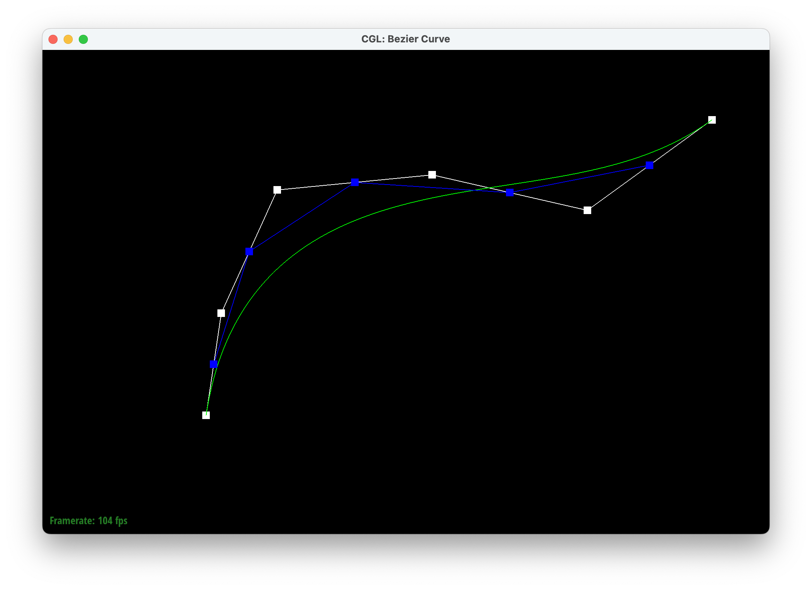
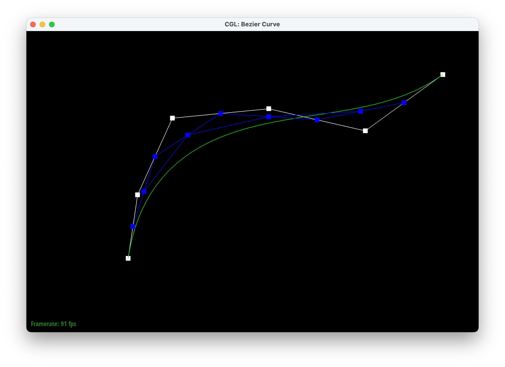
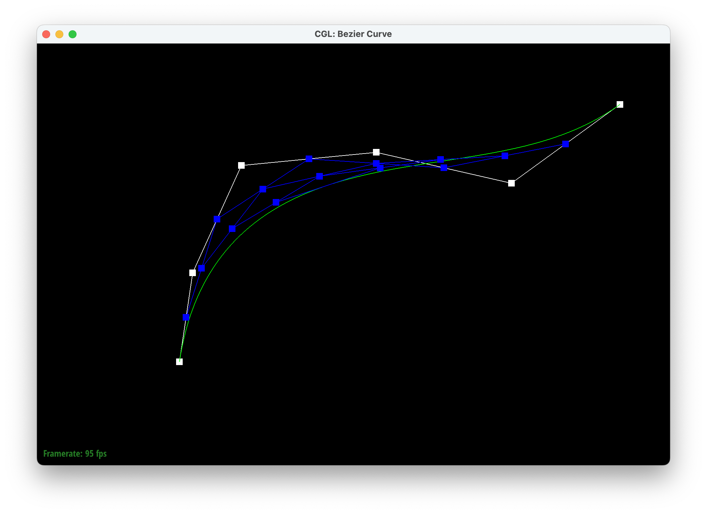
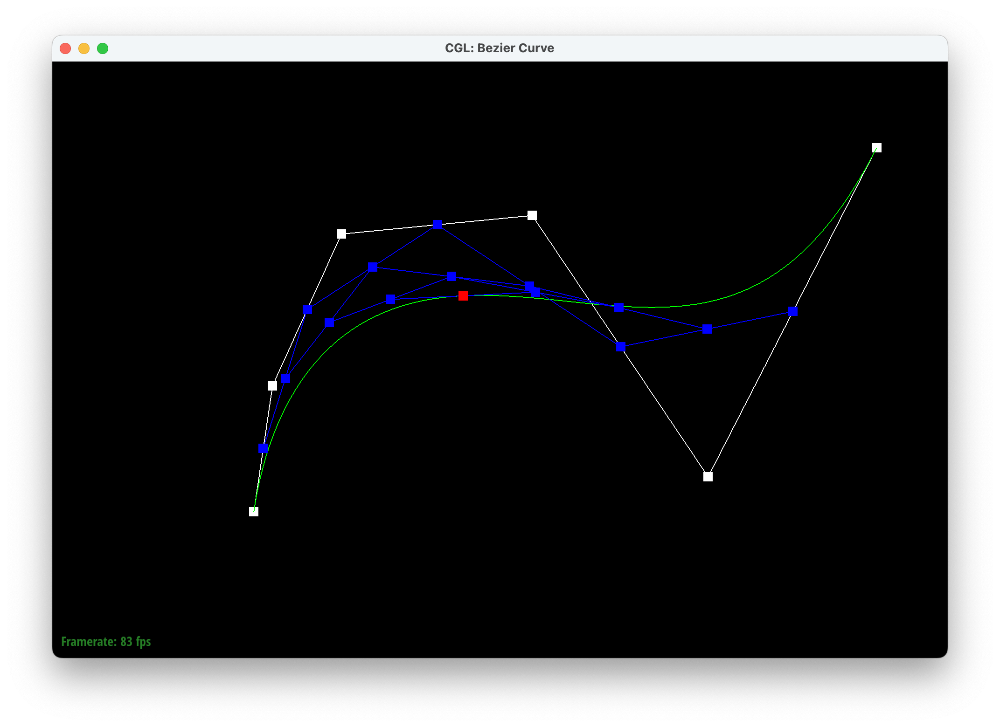
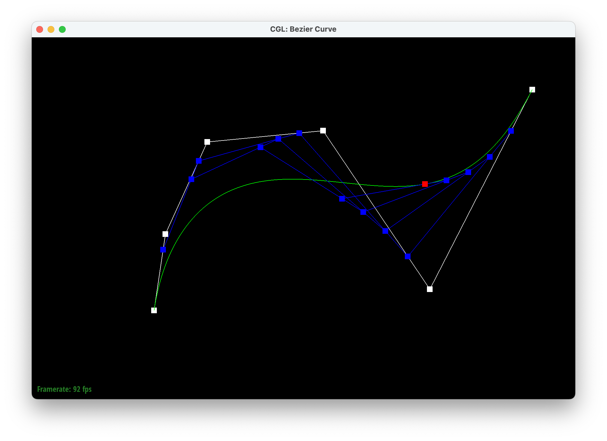
Part 2: Bézier surfaces with separable 1D de Casteljau
We extended the same interpolation step to 3D points. BezierPatch::evaluate1D repeatedly calls that step until one point remains. To evaluate the patch at \( (u, v) \), we first evaluate every row of control points at \( u \), giving one point per row. We then evaluate those row results at \( v \). This two-pass construction evaluates a surface as a curve of curves.
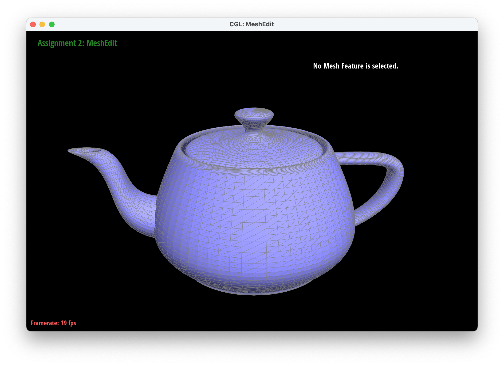
bez/teapot.bez by our Bézier surface evaluation.Triangle meshes
Part 3: Area-weighted vertex normals
For each vertex, we walk around its incident faces using h = h->twin()->next(). On each real triangle, we take the cross product of the two edges leaving the vertex and add it to an accumulator. A cross product has magnitude twice the triangle's area, so the sum automatically gives larger triangles more weight. We skip virtual boundary faces and normalize the final sum. In the comparison, the vertex normals produce smoother shading across triangle boundaries.
dae/teapot.dae with vertex normals off: individual triangular facets remain visible.dae/teapot.dae with vertex normals on: shading changes smoothly across the surface.Part 4: Edge flip
An interior edge shared by triangles \( (a, b, c) \) and \( (c, b, d) \) can be flipped from diagonal \( b-c \) to diagonal \( a-d \). Our implementation first gathers the six local halfedges and their vertices and faces. It then rewires the two three-edge face cycles and updates the stored halfedge on each affected vertex and face. The operation changes no element counts and returns immediately for a boundary edge. To check the pointers, we tracked each halfedge's starting vertex, next, twin, and face before and after the flip.
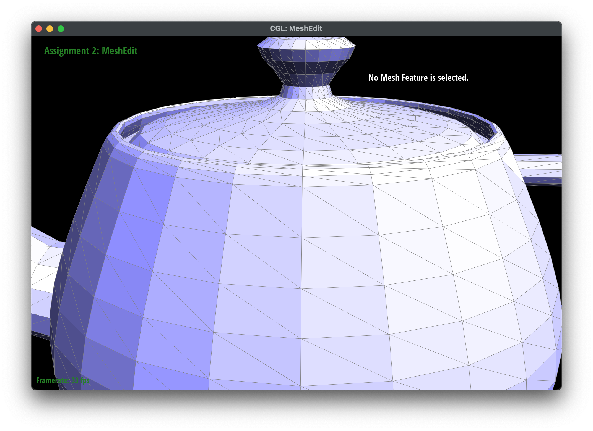
Part 5: Edge split
Splitting an interior edge inserts a vertex at the midpoint of its endpoints and turns two neighboring triangles into four. The local change adds one vertex, three edges, two faces, and six halfedges. We reuse the original edge for one half of the split edge and keep the new vertex's stored halfedge along that original edge. As with the flip, we check the four face cycles and the back-pointers after rewiring; a missing pointer can make a later flip or subdivision fail even when one split appears to render correctly.
For the combined example, we applied both operations to the front of the teapot body. Splits inserted midpoint vertices and made the local triangle pattern denser; flips redirected selected diagonals between neighboring triangles. The comparison shows the two effects together: splitting adds mesh elements, while flipping changes how existing vertices are connected.
Part 6: Loop subdivision for mesh upsampling
We calculate all new positions before changing the mesh, so every weight uses the original geometry. For an old vertex \( \mathbf{p} \) of degree \( n \), the new position is \( (1-nu)\mathbf{p}+u\sum_{\mathbf{q}\in N(\mathbf{p})}\mathbf{q} \), where \( u=3/16 \) for degree three and \( u=3/(8n) \) otherwise. For a new edge vertex, the position is \( \frac{3}{8}(A+B)+\frac{1}{8}(C+D) \), using the edge endpoints \( A,B \) and the opposite vertices \( C,D \) of its two adjacent triangles. We then split original edges, flip new edges connecting old and new vertices, and finally assign the saved positions.
The cube's sharp corners and edges round off with repeated subdivision because Loop's weighted averages pull vertices toward their neighbors. Adding nearby support edges before subdividing can reduce this rounding when a sharper feature is desired. The original cube's triangulation is not fully symmetric: corresponding corners have different neighborhoods and therefore receive different weights, making the subdivided shape uneven.
For the symmetric comparison, we split the diagonal edge on each of the cube's six square faces. Each split inserts a midpoint at the face center and turns the two original triangles into four. The resulting mesh has 24 triangles: all eight original corners have degree six, and all six face centers have degree four. Corresponding corners therefore receive the same Loop weights under cube rotations. We saved this mesh as dae/cube_symmetric.dae. In the paired screenshots, both meshes become smooth, but the preprocessed cube rounds evenly while the original retains a visibly lopsided outline after repeated subdivision.
Original cube / Cube after six face-diagonal splits
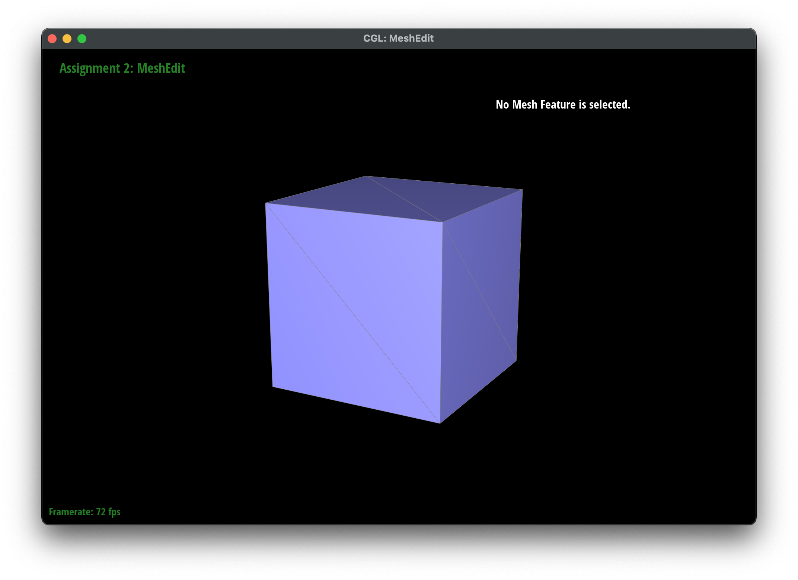
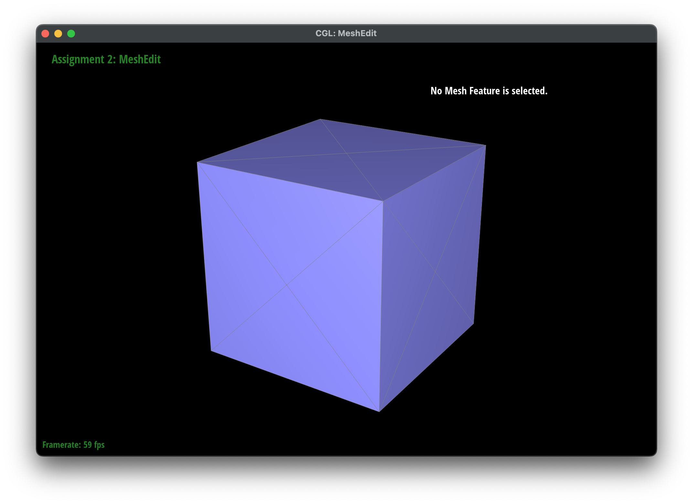
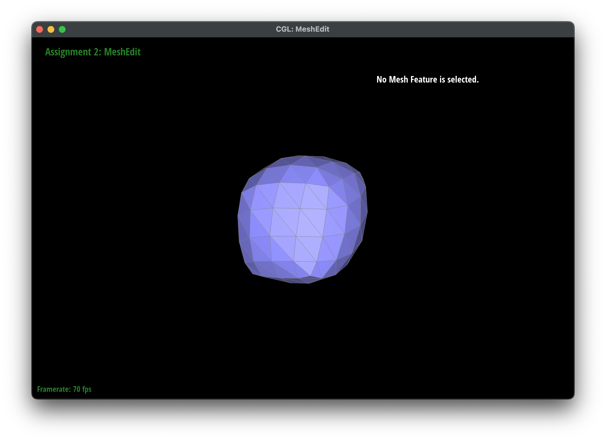
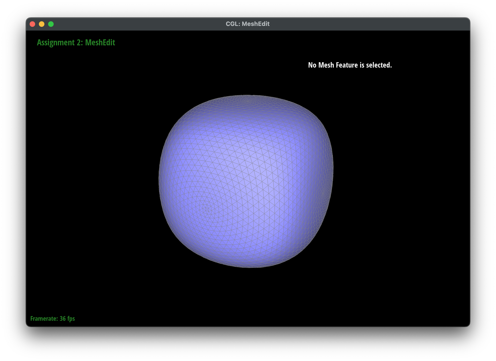
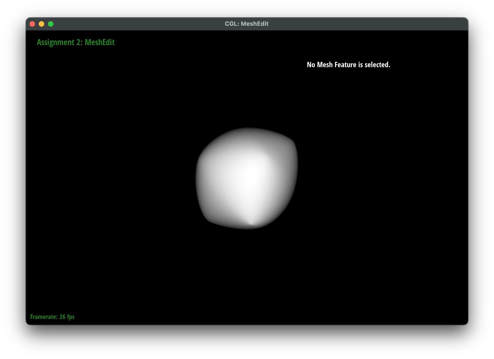
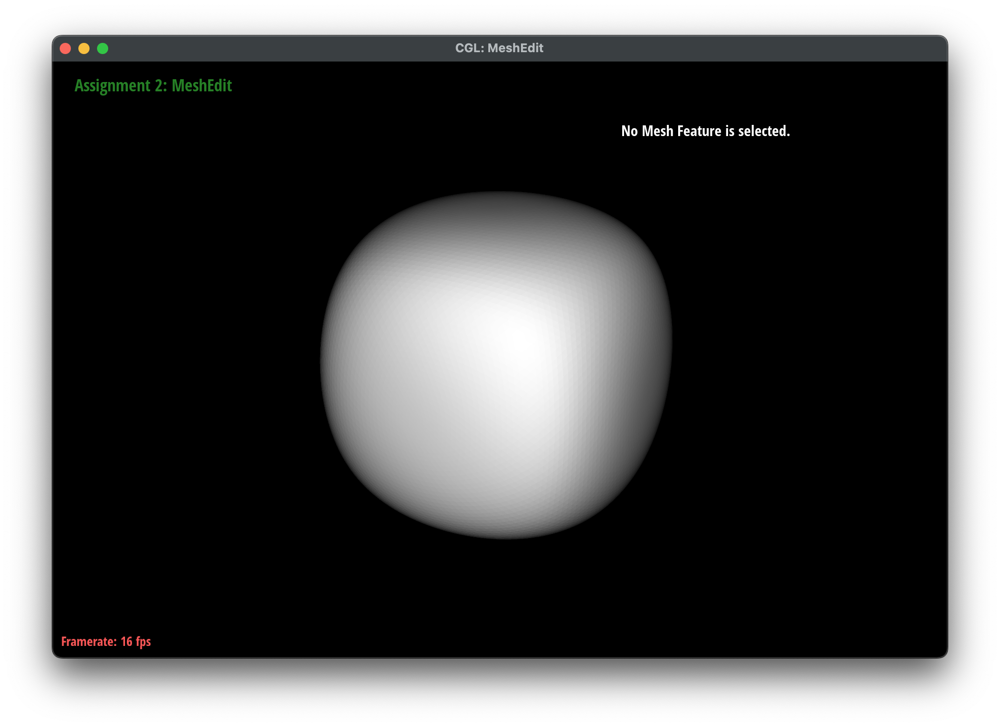
Extra credit
Boundary edge splits (2 points)
A boundary edge has one real triangle and one halfedge in a virtual boundary loop. We orient the selected edge so its real triangle is on one side, insert a midpoint vertex, and split that one triangle into two. On the boundary side, we splice a second halfedge into the loop, turning one boundary segment into two. We update the edge, face, vertex, twin, and next pointers in this local neighborhood. The operation adds one vertex, two edges, one face, and four halfedges. We also set the boundary face's stored halfedge when the mesh is first built, so its loop can be traversed safely.
We checked the operation on an open square: splitting one outside edge changed the mesh from four vertices, five edges, and two triangles to five vertices, seven edges, and three triangles. The boundary remained one closed loop, now with five edges. The included dae/boundary_patch.dae provides a larger open mesh for visual inspection.
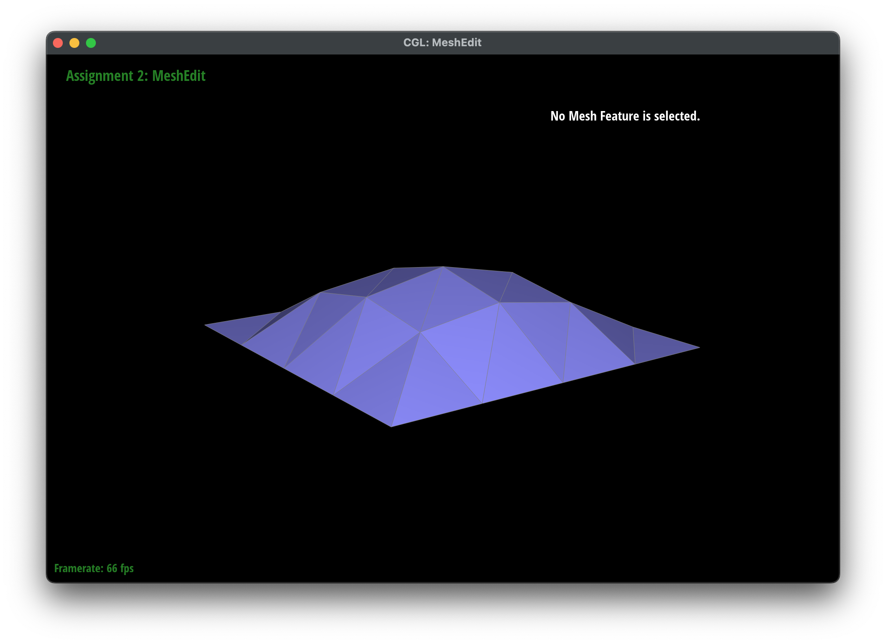
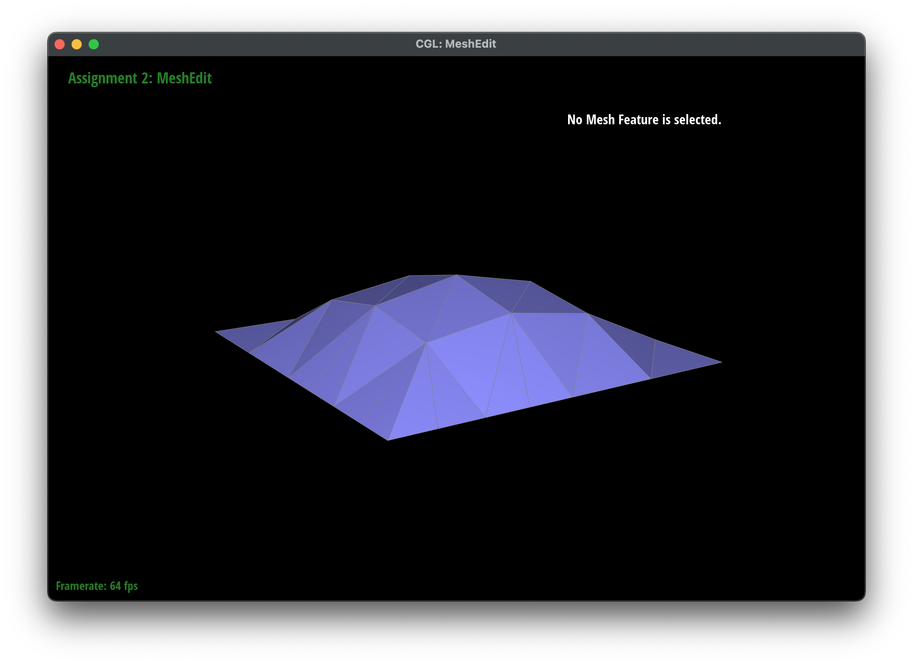
Loop subdivision on meshes with boundaries (2 points)
Interior vertices and edges keep the Loop weights described in Part 6. For a boundary vertex \(\mathbf{p}\), we use only its two neighbors along the boundary: \(\mathbf{p}'=\frac{3}{4}\mathbf{p}+\frac{1}{8}(\mathbf{p}_{\mathrm{prev}}+\mathbf{p}_{\mathrm{next}})\). A new vertex on a boundary edge goes at that edge's midpoint. After computing all positions from the original mesh, we split original edges and flip the appropriate new interior edges as before. These rules preserve an open boundary while refining its outline.
On the open square, one Loop step produced nine vertices and eight triangles; a second produced 25 vertices and 32 triangles. The boundary loop had four, then eight, then 16 edges. We also checked two steps on the raised open patch, whose 32 triangles became 128 and then 512 without closing its boundary.
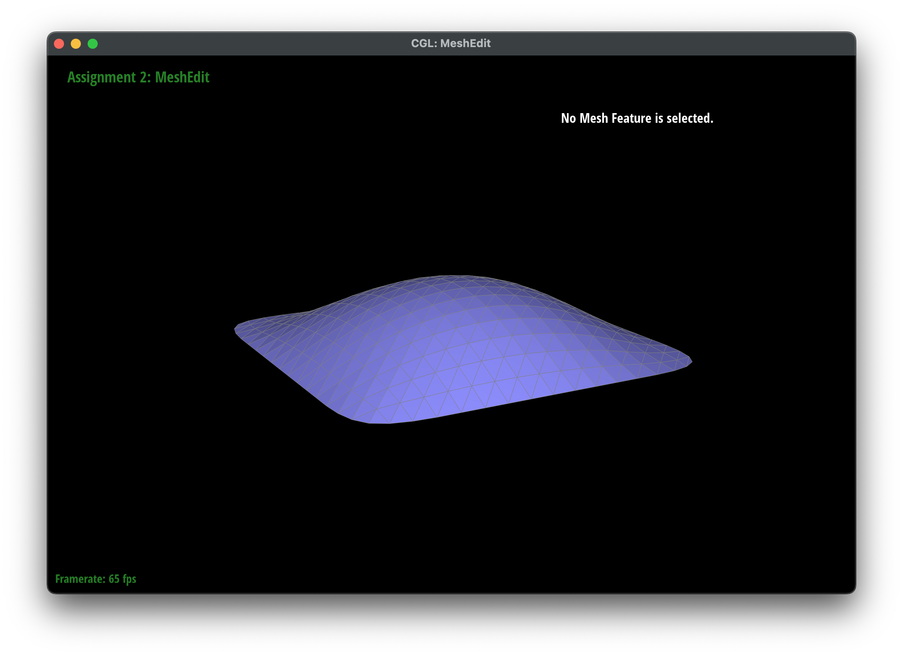
Additional scheme: \(\sqrt{3}\)-subdivision (3 points)
We added \(\sqrt{3}\)-subdivision for closed triangle meshes, triggered by the R key in MeshEdit. Each original triangle gets a new vertex at its centroid. For an old vertex of degree \(n\), we use \(\mathbf{p}'=(1-\alpha_n)\mathbf{p}+(\alpha_n/n)\sum_{\mathbf{q}\in N(\mathbf{p})}\mathbf{q}\), with \(\alpha_n=(4-2\cos(2\pi/n))/9\). We then replace each original edge with an edge joining the centers of its two adjacent faces. This is equivalent to flipping the old edges after face-center insertion. Unlike Loop subdivision, each step triples the triangle count. We leave open meshes unchanged under R; the boundary-capable option is Loop subdivision with L.
On a closed octahedron, three \(\sqrt{3}\) steps produced 24, 72, and 216 triangles from the original eight. We checked that every resulting edge had two incident faces and that the closed-mesh Euler characteristic stayed at two.
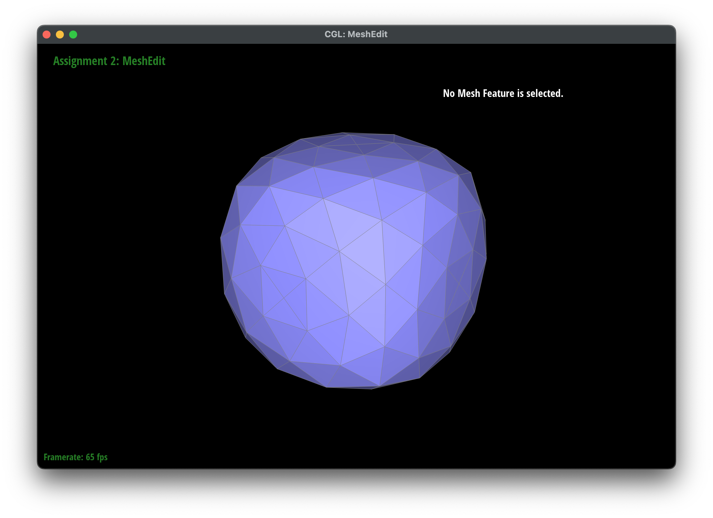
Balloon dog
We modeled a deliberately simple balloon dog from box-like pieces. Its horizontal body, four legs, upright ears, projecting muzzle, and raised tail make it recognizable even in the coarse original mesh. This quadruped silhouette goes beyond the tutorial's humanoid example. We exported the mesh as docs/artcompetition.dae and used Loop subdivision in MeshEdit to round the blocky parts into balloon-like forms. The screenshots show the original mesh, then the result after one and two subdivision steps.
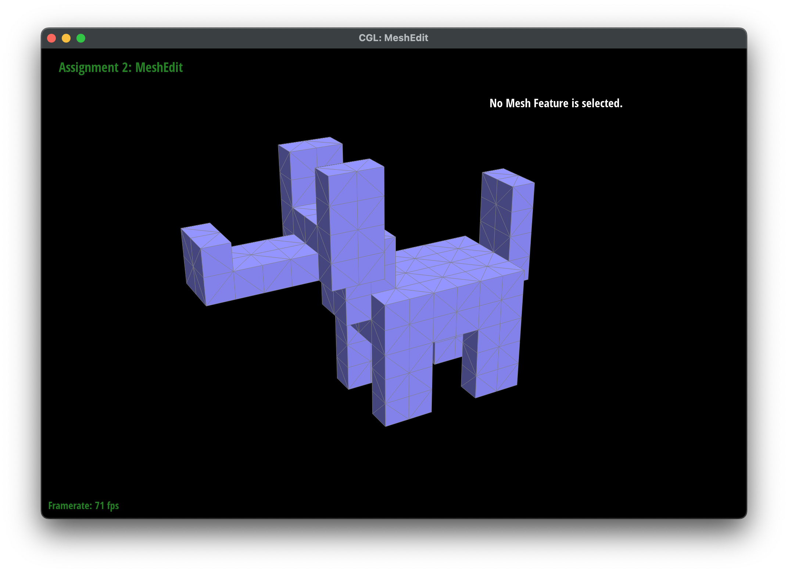
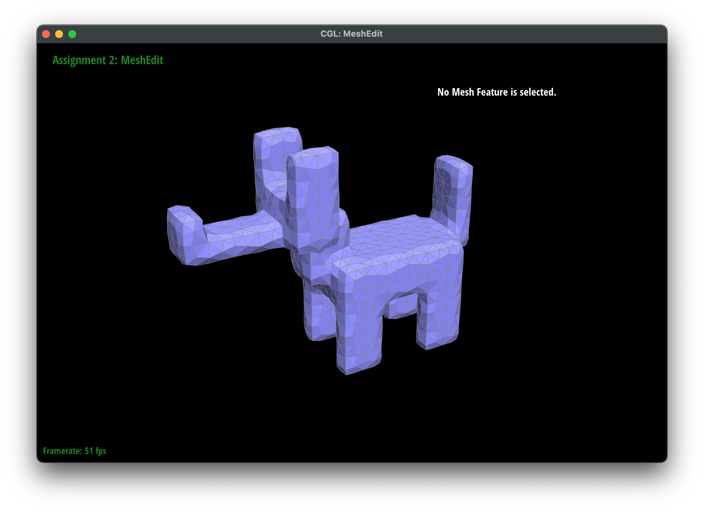
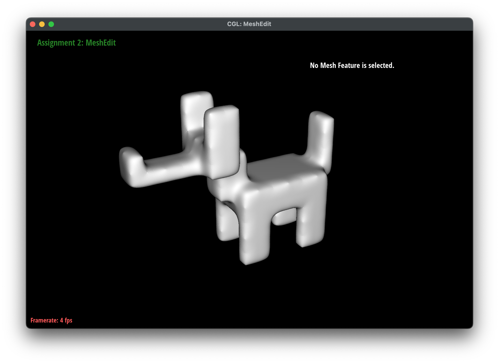